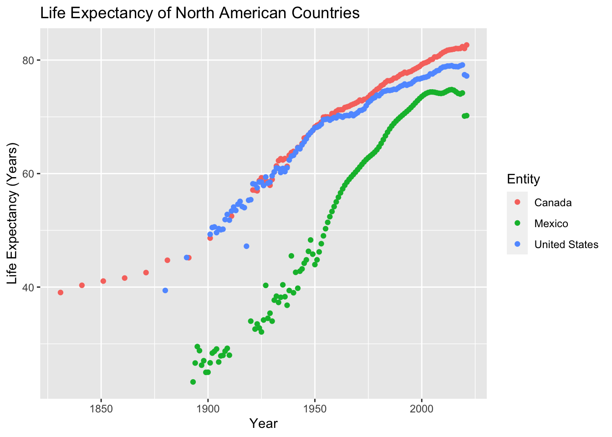
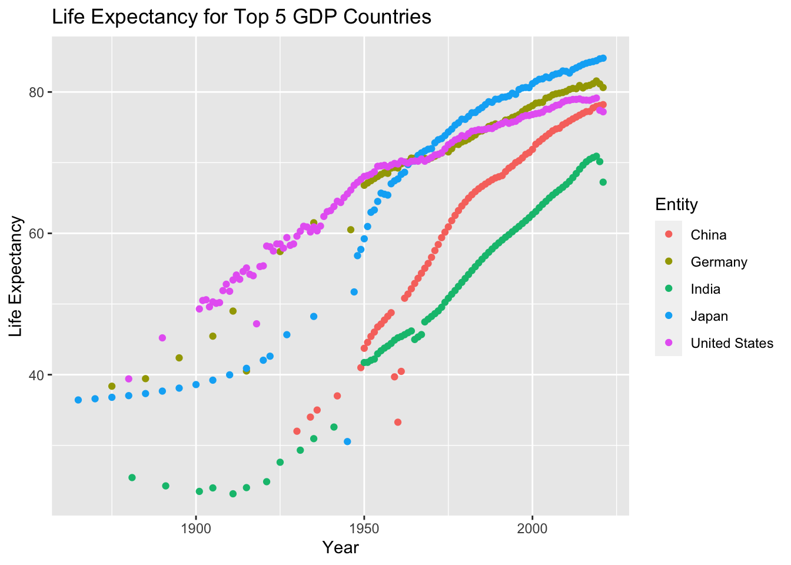

I knew I wanted to create a map for my second blog post, so I looked for a data set that would make this possible. The data set I found contains life expectancy data for countries around the world throughout time. This was a rather simple data set with only four variables, entity (country), code (abbreviation for country), year, and life expectancy. The main question I wanted to explore was how does life expectancy look across the world.I was also interested in how life expectancy has changed over time. I retrieved my data from the following github link; https://github.com/rfordatascience/tidytuesday/blob/master/data/2023/2023-12-05/readme.md
library(tidyverse)
── Attaching core tidyverse packages ──────────────────────── tidyverse 2.0.0 ──
✔ dplyr 1.1.2 ✔ readr 2.1.4
✔ forcats 1.0.0 ✔ stringr 1.5.0
✔ ggplot2 3.4.3 ✔ tibble 3.2.1
✔ lubridate 1.9.2 ✔ tidyr 1.3.0
✔ purrr 1.0.2
── Conflicts ────────────────────────────────────────── tidyverse_conflicts() ──
✖ dplyr::filter() masks stats::filter()
✖ dplyr::lag() masks stats::lag()
ℹ Use the conflicted package (<http://conflicted.r-lib.org/>) to force all conflicts to become errors
Rows: 20755 Columns: 4
── Column specification ────────────────────────────────────────────────────────
Delimiter: ","
chr (2): Entity, Code
dbl (2): Year, LifeExpectancy
ℹ Use `spec()` to retrieve the full column specification for this data.
ℹ Specify the column types or set `show_col_types = FALSE` to quiet this message.
This map shows the the whole globe using the Mercator projection style. Each country is colored based on their life expectancy is the year 2020. From this we can see that countries like Australia and Canada have high life expectancy, in the 80’s. While some countries in central Africa have lower life expectancy, down in the mid to low 60’s.
life_expectancy_NA <- life_expectancy |>filter(Entity =="United States"| Entity =="Mexico"| Entity =="Canada") ggplot(life_expectancy_NA, aes(x = Year, y = LifeExpectancy))+geom_point(aes(color = Entity))+labs(title ="Life Expectancy of North American Countries", x ="Year", y ="Life Expectancy (Years)")

I wanted to dive a bit deeper into the life expectancy of specific regions so decided to create a graph of the three biggest countries in North America. This shows how Canada and the US have have similar life expectancy throughout the range of the data set. The gap between Mexico and the other two countries has been shrinking since the 1950’s, and today all three countries have rather high life expectancy.
life_expectancy_5 <- life_expectancy |>filter(Entity =="United States"| Entity =="Japan"| Entity =="Germany"| Entity =="China"| Entity =="India") ggplot(life_expectancy_5, aes(x = Year, y = LifeExpectancy))+geom_point(aes(color = Entity))+labs(title ="Life Expectancy for Top 5 GDP Countries",x ="Year", y ="Life Expectancy")

This graph is similar to the previous one however for this visualization I chose to look at the five largest countries based on GPD. One notable country in this graph is Japan, who started around the middle of the pack, but now have the highest life expectancy of these countries. Germany and the USA have similar trends throughout history, resulting in a life expectancy of around 80 today. India has the lowest life expectancy of these five countries, hovering in the 20’s around 1900 and up to around 70 today. China used to have one of the lower life expectancy’s, but has caught up to the rest of the pack today.
Conclusion and Wrap Up:
This data set was enjoyable to work with and create visualizations. However one issue I noticed was in the map I created. Some of the countries appeared grey or not filled in. I believe this root of this issue to be a difference in the labeling of each country between the two data sets I used. I was able to quickly fix the issue for the United States. However, if I had more time to comb through all the countries in the data set, I would like to fix all the names to the whole map is filled in.
Connection:
For my map I created the map similar to ones we made in class, using the whole world map rather than just the USA or one state. For the color scheme on my mad I chose to use a sequential color scheme to show the better show the range of life expectancy values across the globe. My two graphs clearly show the trends for each country, using a different color for each one, and the overall grpahs themselves are neat and not cluttered.
Note:
Top 5 GDP retrieved from https://www.forbesindia.com/article/explainers/top-10-largest-economies-in-the-world/86159/1#:~:text=Which%20are%20the%20top%205,hold%20those%20positions%20in%202024.&text=%236%20United%20Kingdom%20(U.K.)